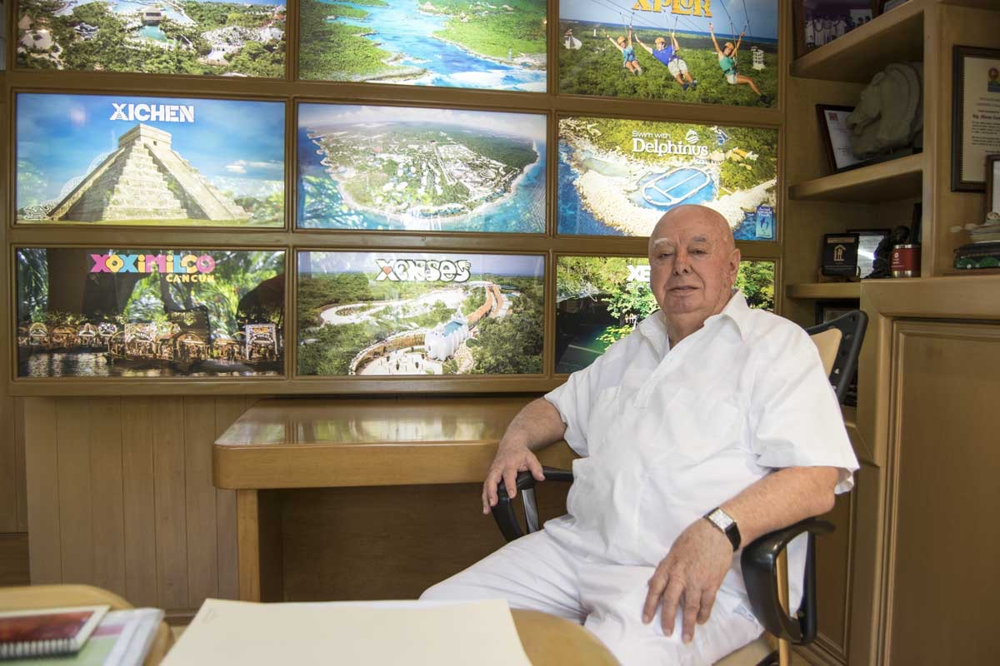
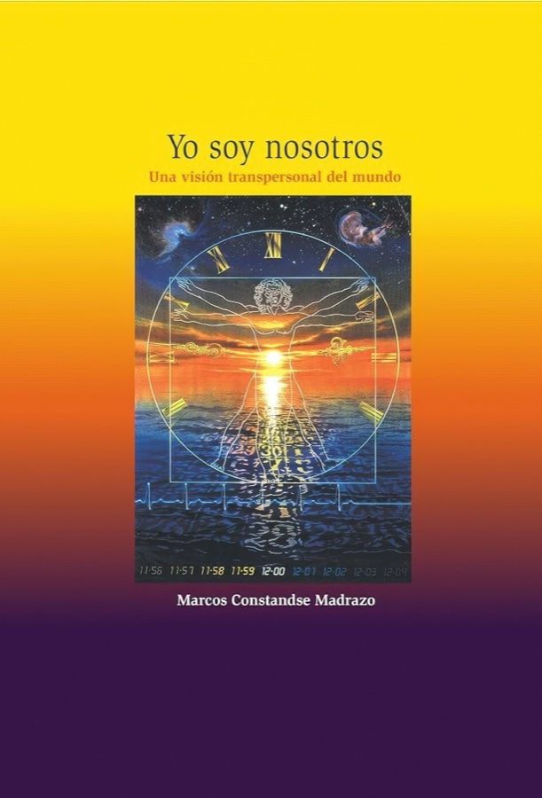

Integración del conocimiento
Su pensamiento tiende puentes entre la ciencia moderna, la filosofía perenne y la experiencia personal, creando un mapa integral del conocimiento humano.
Marcos Constandse une ciencia, espíritu y experiencia para inspirar una vida con conciencia.
Marcos Constandse Madrazo es un pensador incansable, empresario visionario y explorador del alma humana. Desde hace más de tres décadas, ha recorrido un camino único que integra ciencia, filosofía, ecología y espiritualidad para ofrecer una visión del mundo donde todo está profundamente conectado: el universo, la Tierra, la vida, el ser humano y su evolución consciente.

Su obra literaria desarrolla la filosofía del Humanismo Evolutivo Transpersonal, planteando la evolución desde la conciencia individual hacia la conciencia colectiva como proceso transformador de la humanidad. Su libro “Yo soy nosotros” fue galardonado con el Premio Nacional de Ensayo Filosófico.

En su vida empresarial formó cuatro grupos. El grupo inicial en el que adquiere experiencia, Grupo Mezcalapa, que administró una diversidad de empresas. El segundo grupo que fue cofundador fue Grupo Ritco. El tercer grupo que formó como cofundador también y aportando las ideas básicas del mismo fue Grupo Palace, grupo de hoteles Palace en Cancún. Y el cuarto grupo que fue cofundador y que estuvo al frente de la formación espiritual, financiera, legal y de auditoría fue Grupo Xcaret. De esos cuatro grupos que formó parte en su fundación, tres de ellos, en su momento, han estado calificados como las 200 empresas más importantes de México.
Autor de obras como Yo soy nosotros, Ecología y espiritualidad, ¡Déjalo ser!, El arte de ser empresario y ¡Y lo mejor aún está por venir!, Constandse ha dedicado su vida a explorar las conexiones profundas entre todos los aspectos de la existencia.
Tres de ellos, en su momento, han estado calificados como las 200 empresas más importantes de México.
La obra de Marcos Constandse explora la intersección entre ciencia, espiritualidad y conciencia humana, buscando una comprensión integral del ser y su relación con el todo.
Su pensamiento tiende puentes entre la ciencia moderna, la filosofía perenne y la experiencia personal, creando un mapa integral del conocimiento humano.
Propone una visión del ser humano que trasciende el individualismo para reconocer nuestra interdependencia fundamental con los demás y con toda la vida.
Defiende una ética basada en la expansión de la conciencia, que reconoce la responsabilidad que tenemos hacia nosotros mismos, hacia los demás y hacia el planeta.